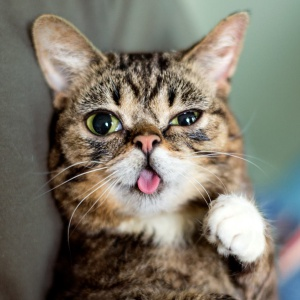

Perros
PerritosLos Perros también

Tengo varias mascotas porque me gustan los animales. Desde pequeño he tenido contacto con ellos por eso me siento más comodo durmiendo con uno sobre la cama, aunque me quite le lugar que solo.
Los gatos son bonitos
Los Perros también